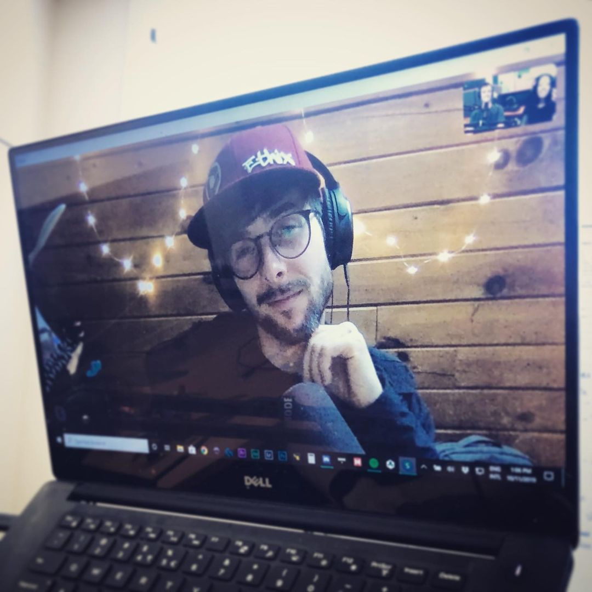

Steele Davis, más conocido en el mundillo como "Mr. Steele", hizo declaraciones a la prensa especializada acerca de qué lo motivó a este cambio tan radical:
-"Móstoles es el lugar perfecto para desarrollar mis nuevos proyectos" "... además tiene el parque de El Soto..." "... es muy bonito!"
Al poco de saber de sus intenciones de mudarse a nuestro país, muchos de sus fans se desmayaron y sufrieron shock.
Varios grupos de pilotos están preparando su bienvenida en el aeropuerto de barajas, en la que se han organizado una fiesta con bailes regionales, corte de jamón ibérico y paellas de tamaño XXL.
Steele Davis, más conocido en el mundillo como "Mr. Steele", hizo declaraciones a la prensa especializada acerca de qué lo motivó a este cambio tan radical:
-"Móstoles es el lugar perfecto para desarrollar mis nuevos proyectos" "... además tiene el parque de El Soto..." "... es muy bonito!"
Al poco de saber de sus intenciones de mudarse a nuestro país, muchos de sus fans se desmayaron y sufrieron shock.
Varios grupos de pilotos están preparando su bienvenida en el aeropuerto de barajas, en la que se han organizado una fiesta con bailes regionales, corte de jamón ibérico y paellas de tamaño XXL.

MR Steele posando en medio de la entrevista